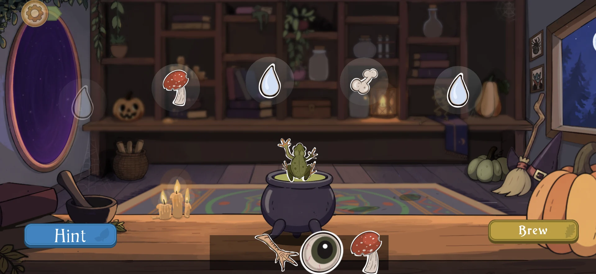

DevLog #6
Lumen Grove’s First Halloween: A Cauldron, Pumpkins and a Little Creative Chaos
What made it into Lumen Grove’s first seasonal event, what needed a different approach, and the joy of creating something new.

Lumen Grove’s first event has come to an end, and I wanted to share a few thoughts: what made it into the game, what needed a different approach, and what it was like to work on a seasonal event for the first time.
But first, the main thing: it was a lot of fun.
After months of working on analytics, fixes and the experience of players finding their feet in the game, creating fresh content felt like a breath of fresh air. All that day-to-day work matters, but I’ll be honest: it can get boring. This was a chance to come up with ideas, experiment and bring something new into the game’s world again.
It felt like a small game jam: very little time, a flood of ideas, and the need to choose what I could realistically finish before the holiday. Even after trimming the plan, I couldn’t get everything done. And, as I’ve had to admit, that’s okay. The experience helps me understand my limits and plan the next event better.
Still, the most exciting part is what did make it into the game.
The Witch’s Cauldron
Probably my favourite part of the event was the minigame where you brew a potion by remembering its recipe.
There are three difficulty levels, each adding more ingredients to keep in mind. At some point, that little personal challenge kicks in: “Can I get through every level without making a single mistake?”

For me, it turned into the kind of game that makes you want to come back and try again. There were also no ads in the minigame itself, so players could brew as many potions as they liked without interruptions.
A Little Spooky, Still Cozy
The hub got a Halloween makeover, with pumpkins, little bones and seasonal details. I wanted to add a little spookiness while keeping the cozy feeling of Lumen Grove.

This is definitely easier to show than to describe:
Seasonal Decorations
Of course, there were new decoration sets too. Some were available to buy, while a selection of unique decorations could be earned in the market by watching an ad.

It was lovely to make things players could use to bring a little more Halloween atmosphere to their own corner of the forest.
The Raven King’s Story
Another part of the event was the story of the Raven King, delivered to players through Jackdaw Post.
I’ll admit that this format came about because I was running out of time. I originally planned a separate story for the Book of Forgotten Knowledge, but I couldn’t build it the way I wanted before the event began.
At the same time, I really wanted to share it with you already. Jackdaw Post gave me a way to tell the story with the time and tools I had.
I still plan to return to that idea in an interactive, illustrated format. The Raven King deserves pages of his own.
This was my first experience of making a seasonal event for Lumen Grove, and it left me feeling inspired. Not everything followed the original plan, but I got to try something new, learn from it, and rediscover the joy of creating little adventures in this world.
It’s a good thing the winter holidays are just around the corner. Halloween left me with plenty of creative energy, and I can’t wait to turn it into something fun for Lumen Grove.
Thank you to everyone who joined our first celebration! ❤️